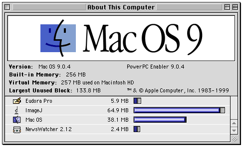

|
Macintosh Installation
Download and expand the Macintosh self-extracting archive. (Use Stuffit Expander if your browser does not automatically expand the archive.) Move the resulting "ImageJ" folder to a convenient location such as the Applications folder. To run ImageJ, double-click on the ImageJ icon.
Requirements
ImageJ requires Macintosh Runtime for Java (MRJ), available from www.apple.com/java/. MRJ requires Mac OS 8.1 or later. MRJ is preinstalled on new Macs. Older versions of MRJ had many bugs so users of older Macs may need to upgrade to the latest version. ImageJ will run on a 64MB Mac but it runs better with 256MB or more, particularly when working with large images and/or stacks.
Memory
Java applications allocate memory from the System heap so there is usually no need to increase the value of "Preferred Size" in
ImageJ's "Get Info" dialog. Strangely enough, allocating more memory to ImageJ reduces the amount of memory available for
loading images! It may, however, be necessary to allocate more memory to ImageJ to avoid error messages with plugins that use
QuickTime for Java. The Finder's "About this Computer" window is a good way to monitor ImageJ's memory usage.

In the case shown here, ImageJ is using 65MB of memory and 134MB is available for opening additional images and stacks.
Drag and Drop
The QuitHandler plugin in the plugins/Utilities folder is called by ImageJ to open files dropped on the ImageJ icon and files
with creator code "imgJ" that are double-clicked. Files can be any type supported by ImageJ's
File/Open command (TIFF, JPEG, GIF, BMP, DICOM, FITS, PGM, ZIP/TIFF, LUT, ROI or text). Note: drag and drop may not work until you delete all older versions of ImageJ and rebuild the desktop.
QuickTime for Java
The Capture Video..., QuickTime Movie... and Pict... commands in the File/Import submenu and the File/Save As/QuickTime
Movie... command are preinstalled plugins that require
QuickTime for Java,
which is preinstalled on Mac OS 9.04 and later. With
older systems, you must install it by selecting "QuickTime for Java" in the "Custom" install option of the QuickTime installer.
Compiling Plugins
The MRJ Software Development Kit (SDK) from
developer.apple.com/java/text/download.html
must be installed in order for the Plugins/Compile and Run command to work.
Upgrading
To upgrade to the latest version of ImageJ, replace the ij.jar file in the ImageJ folder with a newer one from http://rsb.info.nih.gov/ij/upgrade/. After upgrading, the commands in the File menu that use QuickTime for Java will be gone but you can still run these plugins directly from the Plugins/QuickTime submenu.
|